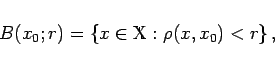
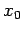

Inhalt Index DeskTop Bronstein

 Funktionalanalysis Metrische Räume Begriff des metrischen Raumes
Funktionalanalysis Metrische Räume Begriff des metrischen Raumes


In einem metrischen Raum , dessen Elemente auch Punkte heißen, nennt man für eine reelle Zahl r>0 und einen fixierten Punkt x0 die Mengen
|  | (12.51) |
| (12.52) |
offene bzw. abgeschlossene Kugel mit dem Radius r und dem Zentrum . Im Vektorraum  ergeben sich mit den Metriken (12.43) und (12.44) für x0=0 und r=1 als Kugeln die in den folgenden zwei Abbildungen dargestellten Mengen.
ergeben sich mit den Metriken (12.43) und (12.44) für x0=0 und r=1 als Kugeln die in den folgenden zwei Abbildungen dargestellten Mengen.
Eine Teilmenge U eines metrischen Raumes heißt Umgebung des Punktes , wenn x0 mit einer ganzen offenen Kugel zu U gehört, also es , so daß gilt. Eine Umgebung U des Punktes x bezeichnet man auch mit . Offenbar ist jede Kugel auch Umgebung ihres Zentrums; eine offene Kugel ist sogar Umgebung jedes ihrer Punkte. Man nennt einen Punkt x0 inneren Punkt einer Menge  wenn x0 mit einer Umgebung zu A gehört, also es existiert eine Umgebung U von x0 mit Schließlich heißt eine Teilmenge eines metrischen Raumes offen, wenn alle ihre Punkte innere Punkte sind. Die (bisher nur so benannten) offenen Kugeln in jedem beliebigen metrischen Raum, insbesondere alle offenen Intervalle aus
wenn x0 mit einer Umgebung zu A gehört, also es existiert eine Umgebung U von x0 mit Schließlich heißt eine Teilmenge eines metrischen Raumes offen, wenn alle ihre Punkte innere Punkte sind. Die (bisher nur so benannten) offenen Kugeln in jedem beliebigen metrischen Raum, insbesondere alle offenen Intervalle aus  , sind die Prototypen offener Mengen. Die Gesamtheit aller offenen Mengen genügt den folgenden Axiomen der offenen Mengen:
, sind die Prototypen offener Mengen. Die Gesamtheit aller offenen Mengen genügt den folgenden Axiomen der offenen Mengen:
Man nennt eine Teilmenge A eines metrischen Raumes beschränkt, wenn für ein gewisses Element x0 (das nicht unbedingt der Menge A angehören muß) und eine gewisse Zahl R>0 die Menge A in der Kugel B(x0;R) liegt, wofür man auch schreibt.